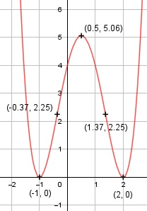

Aufgabe 56 f(x) = (x + 1)2 * (x - 2)2 f(x) = (x2 + 2x + 1) * (x2 - 4x + 4) f(x) = x4 - 2x3 - 3x2 + 4x + 4 f'(x) = 4x3 - 6x2 - 6x + 4, f''(x) = 12x2 - 12x - 6, f'''(x) = 24x - 12 Definitionsbereich: -∞ < x < ∞ Wertebereich: 0 ≤ f(x) < ∞ (siehe Extrempunkte) Asymptoten: - Symmetrie: - Nullstellen: x4 - 2x3 - 3x2 + 4x + 4 = 0 Durch Probieren gefunden x1 = 2 Hornerschema: 1 -2 -3 4 4 x1 = 2 2 0 -6 -4 ------------------------------- 1 0 -3 -2 0 Polynomdivision: x4 - 2x3 - 3x2 + 4x + 4 : (x - 2) = x3 - 3x - 2 -(x4 - 2x3) ------------ 0 - 3x2 + 4x + 4 -(-3x2 + 6x) ------------- -2x + 4 -(-2x + 4) ----------- 0 x3 - 3x - 2 = 0 Durch Probieren gefunden x2 = 2 1 0 -3 -2 x2 = 2 2 4 2 -------------------------- 1 2 1 0 Polynomdivision: x3 - 3x - 2 : (x - 2) = x2 + 2x + 1 -(x3 - 2x2) ------------ 2x2 - 3x - 2 -(2x2 - 4x) ------------ x - 2 -(x - 2) --------- 0 Doppelte Nullstelle bei 2 --> Berührpunkt, Extrempunkt x2 + 2x + 1 = 0 p, q - Formel: p = 2, q = 1 x3,4 = x3,4 = -1 ± x3,4 = -1 ± x3,4 = -1 (doppelte Nullstelle, Berührpunkt, Extrempunkt) N1,2 (2|0), N3,4 (-1|0) Schnittpunkt mit der y-Achse: f(0) = 04 - 2 * 03 - 3 * 02 + 4 * 0 + 4 = 4 Sy(0|4) Extrempunkte: liegen bei 2 und -1 4x3 - 6x2 - 6x + 4 = 0 Hornerschema: 4 -6 -6 4 x1 = 2 8 4 -4 ------------------------ 4 2 -2 0 x2 = -1 -4 2 --------------- 4 -2 0 4x - 2 = 0 | +2 4x = 2 | :4 x3 = 0,5 f(0,5) = 0,54 - 2*0,53 - 3*0,52 + 4*0,5 + 4 = 5,06 Polynomdivision: x11 = 2 4x3 - 6x2 - 6x + 4 : (x - 2) = 4x2 + 2x - 2 -(x3 - 8x2) ------------ 2x2 - 6x + 4 -(2x2 - 4x) ------------- -2x + 4 -(-2x + 4) ----------- 0 Polynomdivision: x2 = - 1 4x2 + 2x - 2 : (x + 1) = 4x - 2 -(4x2 + 4x) ------------ -2x - 2 -(-2x - 2) ----------- 0 f''(0,5) = 12 * 0,52 - 12 * 0,5 - 6 < 0 --> Hochpunkt (0,5|5,06) f''(2) = 12 * 22 +- 12 * 2 - 6 > 0 --> Tiefpunkt (2|0) f''(-1) = 12 * (-1)2 - 12 * (-1) - 6 > 0 --> Tiefpunkt (-1|0) Wendepunkt: 12x2 - 12x - 6 = 0 A, B, C - Formel: A = 12, B = -12, C = -6 x1,2 = x1,2 = x1,2 = 12 ± 20,8 x1,2 = ------------ 24 x1 = 1,37 f(1,37) = 1,374 - 2 * 1,373 - 3 * 1,372 + + 4 * 1,37 + 4 = 2,25 x2 = -0,37 f(-0,37) = (-0,37)4 - 2 * (-0,37)3 - 3*(-0,37)2 + + 4 * (-0,37) + 4 = 2,25 f'''(1,37) = 24 * 1,37 - 12 ≠ 0 --> Wendepunkt (1,37|2,25) f'''(-0,37) = 24 * (-0,37) - 12 ≠ 0 --> Wendepunkt (-0,37|2,25) Graph:
